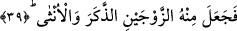
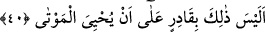

getirenin varlığını kabul demektir. Buna göre ifâdeyi takdir edecek olursak; insanoğlu
nutfe hâlindeydi, sonra alaka/kan pıhtısı hâline geldi.
“Derken Allah onu biçime koydu.” Yâni bir diğer kırk gün daha geçtikten sonra onu
organları birbirinden ayrılıp fark edilmeye elverişli et parçası hâline soktu. Bu et
parçasını organların birbirinden ayrıldığı kemik hâline getirdi. Bunu kemikleri dimdik
yaparak sağladı, sonra o kemiklerin üzerine yaratılışını, biçimini güzel gösterecek
kuvvetini kullanabileceği et giydirdi ve bu vücûda ruh üfledi. “Ve” ona “şekil verdi.”
Vücûdunu düzgün hâle getirdi, yaratılışını mükemmel kıldı.
Müfredat’ta ifâde olunduğuna göre; “onun yaratılışını ilâhî hikmetin gerektirdiği
biçimde yaptı. Bir başka ifâdeyle ilâhî hikmetin gereğine uygun olarak onun vücûdunu
düzgün hâle getirdi.
Bâzı âlimlere göre âyette yer alan “sevvâ” kelimesinin kökü olan “tesviye” ve ta’dil,
insanın vücûdunda bulunan çift organlardan birini diğerine eşit olarak yarattı, demektir.
39. Ondan da iki eşi, yâni erkek ve dişiyi var etmişti.
“Ondan da” insan cinsinden veya menîden “iki cinsi, erkek ve dişiyi var etti.”
yarattı. Bu yaptığımız tefsire göre âyette yer alan “ceale” fiili “haleka/yarattı”
anlamınadır. Bu nedenle fiilin bir mef’ûl alması ile yetinilmiştir, o mef’ûl de
“zevceyni/iki cins” kelimesidir. Âyette yer alan “zeker/erkek” ve “unsâ/dişi” kelimeleri
az önce geçen zevceyn kelimesinden bedeldir. Bu ikisinin gizli bir fiilin mef’ûlü
olmaları da mümkündür. Bilindiği üzere âyet başında geçen “fa” ta’kib ifâde eder.
Birbirini takip eden iki ifâdenin birbirinden farklı olması kural gereğidir. Burada bu
kurala göre önceki âyetteki: “Allah onu biçime koydu ve şekil verdi” ifâdesiyle “ondan
iki cinsi erkek ve dişiyi var etti” ifâdelerinin birbirinden ayrı olmaları gerekir.
Herhalde; “Allah onu biçime koydu ve şekil verdi ifâdesi iki cins arasındaki ayırımı
yapabilmeye elverişli bir yaratılış aşaması olsa gerektir. Bu otuzdokuzuncu âyet ise
yâni: “Ondan iki cinsi erkek ve dişiyi var etti” ifâdesine gelince bu da gerçek hayattaki
eşler arasında var olan ayırımı ifâde etmiş olsa gerektir.
40. Peki (bunları yapan) Allah’ın, ölüleri tekrar diriltmeye gücü yetmez mi?
“Peki (bunları yapan)” bu eşsiz yaratışı gerçekleştiren şânı yüce Allah’ın “ölüleri
tekrar diriltmeye gücü yetmez mi?” Akla göre tekrar diriltmek ilk defa yaratmaktan